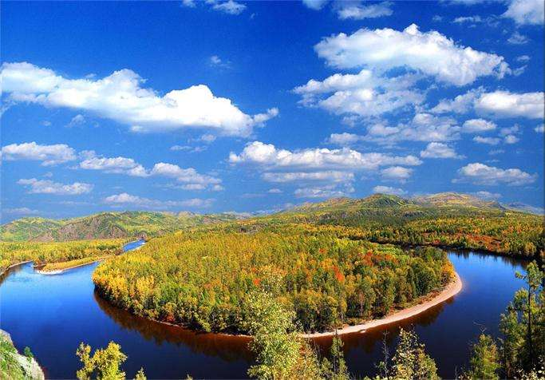

苍山，是云岭山脉南端的主峰，由十九座山峰由北而南组成，北起洱源邓川，南至下关天生桥。苍山十九峰，巍峨雄壮，与秀丽的洱海风光形成强烈对照。苍山十九峰，每两峰之间都有一条溪水奔泻而下，流入洱海，这就是著名的十八溪。 洱海古代文献中曾称为叶榆泽，位于云南大理郊区，宛如一轮新月，静静地依卧在苍山和大理坝子之间，是云南省第二大淡水湖，湖面面积256.5平方公里，平均湖深10米，因形状像一个耳朵而取名为“洱海”。洱海属断层陷落湖泊，湖水清澈见底，透明度很高，水质优良，水产资源丰富。 “下关风，上关花，苍山雪，洱海月” 是这里迤逦风光的四大景致。洱海到苍山之间是一片扇形的冲击平坝，这里田地肥沃、村落相连，崇圣寺三塔笔立挺拔，素有“风景画廊”之称，风光、名胜、民俗融为一体。附近的白族渔村是我国唯一的高原的渔村，五十年代著名的电影《五朵金花》反映的就是这里白族人民的浪漫生活。
最近拍摄
